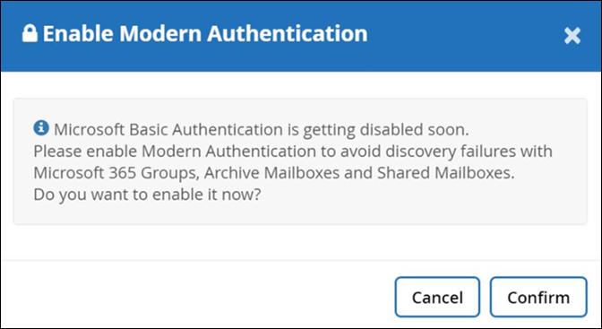
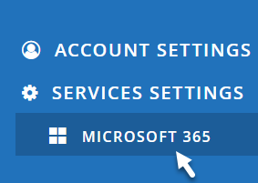
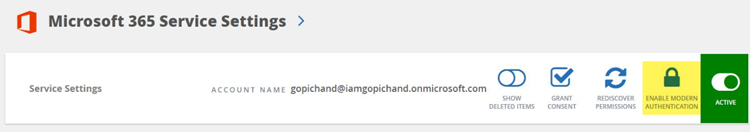

Dokumentationsänderungen beantragen
Dokumentationsänderungen beantragen In GitHub bearbeiten
In GitHub bearbeiten Leitfaden für Beitragende
Leitfaden für BeitragendeModerne Authentifizierung Aktivieren
Beitragende
Microsoft 365 zielt auf Oktober 2021 ab, um die grundlegende Authentifizierung in Exchange Online zu depretieren. Nach Abschreibungsfehlern können Ausfälle der Erkennung für Microsoft 365 Gruppen sowie für freigegebene und archivierte Postfächer auftreten.
Sie können die moderne Authentifizierung jederzeit aktivieren.
Neue Kunden müssen nichts Unternehmen. Moderne Authentifizierung ist aktiviert, wenn Sie sich anmelden.
Bestehende Kunden müssen Maßnahmen ergreifen. Befolgen Sie die folgenden Anweisungen, um die moderne Authentifizierung zu aktivieren.

|
Um die moderne Authentifizierung zu aktivieren, melden Sie sich mit Ihren Anmeldedaten für das Mandantenkonto an. Der Kontoname ist in den Service-Einstellungen von Microsoft 365 zu finden (siehe Option 2 Schritte unten). Stellen Sie sicher, dass die globale Administratorrolle diesem Konto zugewiesen ist. Nachdem die moderne Authentifizierung erfolgreich aktiviert wurde, können Sie die Rolle „globaler Administrator“ aus dem Administratorbenutzer entfernen. |
-
Melden Sie sich bei SaaS Backup für Microsoft 365 an. Die folgende Meldung wird angezeigt.

-
Wählen Sie Bestätigen, um die moderne Authentifizierung zu aktivieren.
-
Alle Berechtigungen akzeptieren. Moderne Authentifizierung ist jetzt aktiviert. Das ZZZ config Service-Konto wurde entfernt.
-
Unter SaaS Backup for Microsoft 365 finden Sie Einstellungen > Serviceeinstellungen > Microsoft 365-Serviceeinstellungen.

-
Wählen Sie Moderne Authentifizierung Aktivieren.

-
Alle Berechtigungen akzeptieren. Moderne Authentifizierung ist jetzt aktiviert. Das ZZZ config Service-Konto wurde entfernt.
Wenn Sie eine Fehlerbenachrichtigung erhalten, können Sie erneut versuchen, die moderne Authentifizierung zu aktivieren.
Support erhalten Sie per E-Mail an saasbackupsupport@netapp.com.
Weitere Informationen finden Sie unter "Basic Authentication and Exchange Online – Update für September 2021".